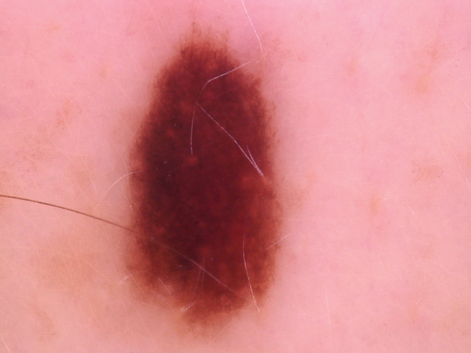

Modelo de Predicción de lesiones dermatológicas
El entrenamiento del modelo está basado en el conjunto de 10015 imágenes dermatoscópicas de Harvard, fue entrenado con Tensorflow. Este modelo tiene como objetivo desarrollar una herramienta de inteligencia artificial para predecir el tipo de lesión dermatológica, como ayuda diagnóstica para identificar rápidamente a pacientes de alta prioridad

Resultados
Estudiantes:
- * Manuel Martinez
- * Maria Pilar Villate
Caracteristicas técnicas del Modelo:
- Exactitud: 90%
- Precisión: 91%
- Sensibilidad: 90%
Descripción de las Lesiones:
- nv: Los nevos melanocíticos son neoplasias benignas de los melanocitos y se presentan en una miríada de variantes, todas ellas incluidas en nuestra serie. Las variantes pueden diferir significativamente desde el punto de vista dermatoscópico.
- mel: El melanoma es una neoplasia maligna derivada de los melanocitos que puede aparecer en diferentes variantes. Si se extirpa en una fase temprana, puede curarse mediante una simple escisión quirúrgica. Los melanomas pueden ser invasivos o no invasivos (in situ).
- bkl: La "queratosis benigna" es una clase genérica que incluye la queratosis seborreica ("verruga senil"), el lentigo solar -que puede considerarse una variante plana de la queratosis seborreica- y la queratosis de tipo liquen plano (LPLK), que corresponde a una queratosis seborreica o a un lentigo solar con inflamación y regresión.
- akiec: Las queratosis actínicas (queratosis solares) y el carcinoma intraepitelial (enfermedad de Bowen) son variantes comunes no invasivas del carcinoma de células escamosas que pueden tratarse localmente sin cirugía...
- Vasc: Las lesiones vasculares de la piel en el conjunto de datos van desde los angiomas de cereza hasta los angioqueratomas y los granulomas piogénicos. Las hemorragias también se incluyen en esta categoría.
- Df: El dermatofibroma es una lesión cutánea benigna considerada como una proliferación benigna o una reacción inflamatoria a un traumatismo mínimo. Es de color marrón y a menudo muestra una zona central de fibrosis dermatoscópica